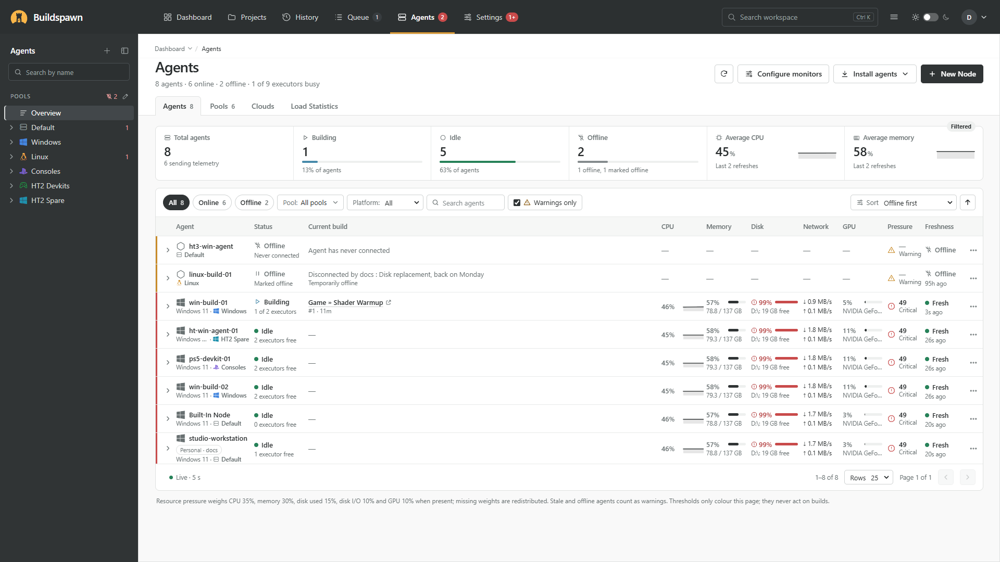
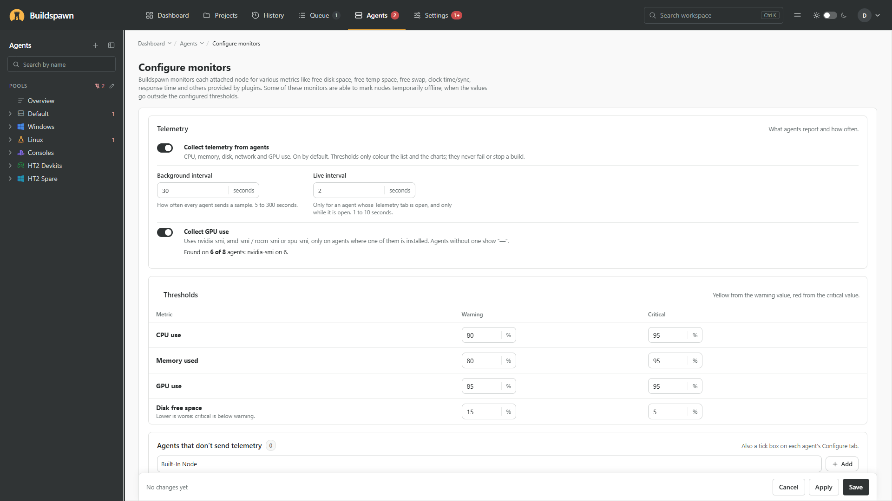
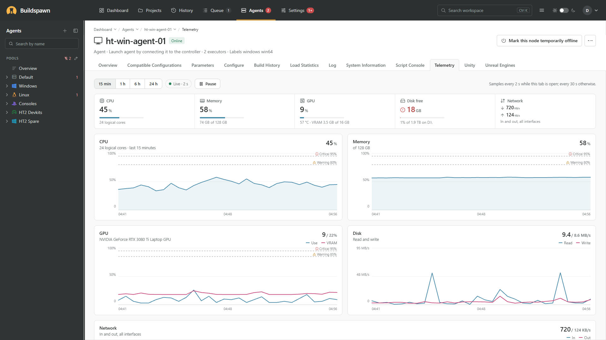

Spot unhealthy agents
Find the machines that are short of disk, memory or CPU before their builds fail.
Before you start
- Telemetry is on (it is by default). Each agent sends CPU, memory, disk, network and GPU values every 30 seconds.
- To change thresholds you must be an administrator. Anyone who can see agents can look.
Steps
- Open Agents in the top bar.
- In the filter bar, tick Warnings only. The list keeps only agents with a warning or critical value. Offline agents count as warnings.
- Read the coloured bar at the start of each row: yellow is a warning, red is critical. The cell that caused it is coloured too, for example Disk at 99%.

- To set when a value counts as a warning, click Configure monitors.
- Under Thresholds, set Warning and Critical for CPU use, Memory used, GPU use and Disk free space. For disk, lower is worse: critical is below warning. For example, on machines with big Perforce workspaces, set Disk free space to warn at
25% and turn critical at10%. - Click Save.

- To look at one machine over time, click its name and open the Telemetry tab.
- Pick a time range: 15 min, 1 h, 6 h or 24 h. The dashed lines on each chart are the Warning and Critical thresholds.
- Click Pause to freeze the charts while you read a spike. Click it again to go live.

Take an agent offline before it runs out of disk
Thresholds on the Configure monitors page only colour the pages. To have Buildspawn stop sending builds to a machine that is short of disk, set a threshold on the agent itself:
- Open the agent, click Configure and open Disk Space Monitoring Thresholds under Node Properties.
- Set Free Disk Space Warning Threshold to
60GB(a warning on the agent's page) and Free Disk Space Threshold to30GB(the agent is marked temporarily offline). Click Save. See Agent settings.
On the machine itself, the tray app or the terminal program shows the same CPU, memory and disk, and its Work folders view cleans old workspaces.
Check it worked
- With Warnings only ticked, the list shows only the agents that pass your new thresholds. When none do, the list is empty.
- The filter is kept in the page address. Bookmark it to open the list filtered each morning.
- On the Telemetry tab, the dashed lines sit at your new values.
Troubleshooting
| Problem | What to do |
|---|---|
| An agent shows "—" in every live column. | Telemetry is off for it. Open the agent's Configure page and tick Collect telemetry from this agent, or remove it from Agents that don't send telemetry. |
| Freshness says Stale. | No sample came in for a while. Check that the agent is still connected; open its Log tab. |
| GPU shows "—". | The machine has no GPU tool that Buildspawn reads (nvidia-smi, amd-smi / rocm-smi or xpu-smi). Install the vendor's tool. |
| Builds still run on an agent in red. | Thresholds only colour the pages; they never stop a build. Mark the agent offline from its row menu while you fix it. |
Next steps
- Telemetry: every card, chart and setting.
- The Agents page: filters, expanded rows and the row menu.
- Agent settings: disk space thresholds and the telemetry box.